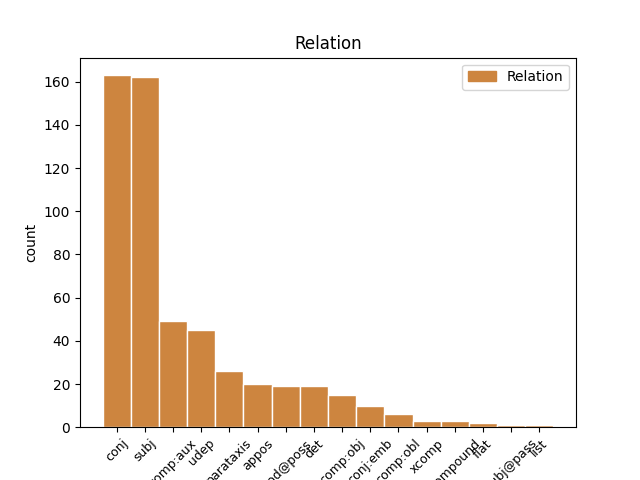
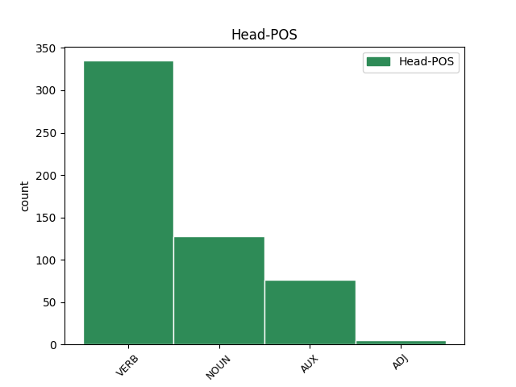
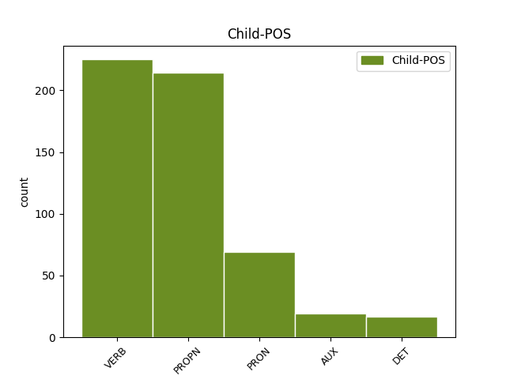

Distribution of features within this leaf



Agreement Rules sorted by frequency.
- When the dependent token is the conjunct(conj) of the head token, and the head token is VERB and the dependent token is VERB.
1 Я _ _ _ _ 0 _ _ _
2 не _ _ _ _ 0 _ _ _
3 дышу дышуть VERB _ Aspect=Imp|Mood=Ind|Number=Sing|Person=1|Tense=Pres|VerbForm=Fin|Voice=Act 0 _ _ _
4 , _ _ _ _ 0 _ _ _
5 а _ _ _ _ 0 _ _ _
6 пью пить VERB _ Aspect=Imp|Mood=Ind|Number=Sing|Person=1|Tense=Pres|VerbForm=Fin|Voice=Act 3 conj _ _
7 благоуханье _ _ _ _ 0 _ _ _
8 Моей _ _ _ _ 0 _ _ _
9 земли _ _ _ _ 0 _ _ _
10 равнинной _ _ _ _ 0 _ _ _
11 и _ _ _ _ 0 _ _ _
12 лесной _ _ _ _ 0 _ _ _
13 . _ _ _ _ 0 _ _ _
1 Юунэй Юунэй PROPN _ Animacy=Anim|Case=Nom|Gender=Masc|Number=Sing 2 subj _ _
2 үмэнэ үмэ VERB _ Mood=Ind|Number=Sing|Person=3|Tense=Aor|VerbForm=Fin 0 _ _ _
3 эндэ _ _ _ _ 0 _ _ _
4 секс _ _ _ _ 0 _ _ _
5 богоолнууд _ _ _ _ 0 _ _ _
6 ороно _ _ _ _ 0 _ _ _
7 . _ _ _ _ 0 _ _ _
1 Эртын _ _ _ _ 0 _ _ _
2 Ромада _ _ _ _ 0 _ _ _
3 бүри _ _ _ _ 0 _ _ _
4 талханай _ _ _ _ 0 _ _ _
5 алаабхи _ _ _ _ 0 _ _ _
6 хүрэтэр _ _ _ _ 0 _ _ _
7 бии бии VERB _ Mood=Ind|Number=Sing|Person=3|Tense=Past|VerbForm=Fin 8 comp:aux _ _
8 болоо бол AUX _ Mood=Ind|Number=Sing|Person=3|Tense=Past|VerbForm=Fin 0 _ _ _
9 һэн _ _ _ _ 0 _ _ _
10 . _ _ _ _ 0 _ _ _
1 Я я PRON _ Case=Nom|Number=Sing|Person=1 3 subj _ _
2 не _ _ _ _ 0 _ _ _
3 дышу дышуть VERB _ Aspect=Imp|Mood=Ind|Number=Sing|Person=1|Tense=Pres|VerbForm=Fin|Voice=Act 0 _ _ _
4 , _ _ _ _ 0 _ _ _
5 а _ _ _ _ 0 _ _ _
6 пью _ _ _ _ 0 _ _ _
7 благоуханье _ _ _ _ 0 _ _ _
8 Моей _ _ _ _ 0 _ _ _
9 земли _ _ _ _ 0 _ _ _
10 равнинной _ _ _ _ 0 _ _ _
11 и _ _ _ _ 0 _ _ _
12 лесной _ _ _ _ 0 _ _ _
13 . _ _ _ _ 0 _ _ _
1 Эхинэй _ _ _ _ 0 _ _ _
2 үедээ _ _ _ _ 0 _ _ _
3 тэдэнэй _ _ _ _ 0 _ _ _
4 уулзалтууд _ _ _ _ 0 _ _ _
5 Иерусалимда Иерусалим PROPN _ Case=Loc|Number=Sing|Person=3 9 udep _ _
6 маша _ _ _ _ 0 _ _ _
7 нюусаар _ _ _ _ 0 _ _ _
8 ябагдадаг _ _ _ _ 0 _ _ _
9 байһанаа байһан VERB _ Mood=Ind|Number=Sing|Person=3|Tense=Pqp|VerbForm=Fin|Voice=Act 0 _ _ _
10 , _ _ _ _ 0 _ _ _
11 удалгүй _ _ _ _ 0 _ _ _
12 олон _ _ _ _ 0 _ _ _
13 тооной _ _ _ _ 0 _ _ _
14 ниигэмлигүүд _ _ _ _ 0 _ _ _
15 болобо _ _ _ _ 0 _ _ _
16 . _ _ _ _ 0 _ _ _
1 Яг _ _ _ _ 0 _ _ _
2 үүнэтэй _ _ _ _ 0 _ _ _
3 эжэл _ _ _ _ 0 _ _ _
4 шалтагаанаар _ _ _ _ 0 _ _ _
5 эртэнэй _ _ _ _ 0 _ _ _
6 Хитадууд Хитад PROPN _ Case=Nom|Number=Plur 8 subj _ _
7 баруунай _ _ _ _ 0 _ _ _
8 оронууд орон NOUN _ Case=Nom|Number=Plur 0 _ _ _
9 гү _ _ _ _ 0 _ _ _
10 , _ _ _ _ 0 _ _ _
11 али _ _ _ _ 0 _ _ _
12 Энэдхэгһээ _ _ _ _ 0 _ _ _
13 саашахиие _ _ _ _ 0 _ _ _
14 " _ _ _ _ 0 _ _ _
15 Тайши _ _ _ _ 0 _ _ _
16 ( _ _ _ _ 0 _ _ _
17 ) _ _ _ _ 0 _ _ _
18 " _ _ _ _ 0 _ _ _
19 гэжэ _ _ _ _ 0 _ _ _
20 нэрэлжэ _ _ _ _ 0 _ _ _
21 байгаа _ _ _ _ 0 _ _ _
22 . _ _ _ _ 0 _ _ _
1 Эдэй _ _ _ _ 0 _ _ _
2 засаг _ _ _ _ 0 _ _ _
3 Самсонгой _ _ _ _ 0 _ _ _
4 түб ТҮБ NOUN _ Animacy=Inan|Case=Acc|Gender=Masc|Number=Sing 0 _ _ _
5 , _ _ _ _ 0 _ _ _
6 Сеул СЕУЛ PROPN _ Animacy=Inan|Case=Acc|Gender=Masc|Number=Sing 4 appos _ _
7 . _ _ _ _ 0 _ _ _
1 СССР _ _ _ _ 0 _ _ _
2 - _ _ _ _ 0 _ _ _
3 эй _ _ _ _ 0 _ _ _
4 Уран _ _ _ _ 0 _ _ _
5 зохёолшодой зохёолшода NOUN _ Animacy=Inan|Case=Ins|Gender=Fem|Number=Sing 0 _ _ _
6 болон _ _ _ _ 0 _ _ _
7 Сэтгүүлшэдэй Сэтгүүлшэ PROPN _ Animacy=Inan|Case=Ins|Gender=Fem|Number=Sing 5 conj _ _
8 холбооной _ _ _ _ 0 _ _ _
9 гэшүүн _ _ _ _ 0 _ _ _
10 , _ _ _ _ 0 _ _ _
11 Буряад _ _ _ _ 0 _ _ _
12 Уласай _ _ _ _ 0 _ _ _
13 соёлой _ _ _ _ 0 _ _ _
14 габьяата _ _ _ _ 0 _ _ _
15 хүдэлмэрилэгшэ _ _ _ _ 0 _ _ _
16 , _ _ _ _ 0 _ _ _
17 Ярослав _ _ _ _ 0 _ _ _
18 Гашегай _ _ _ _ 0 _ _ _
19 нэрэмжэтэ _ _ _ _ 0 _ _ _
20 шангай _ _ _ _ 0 _ _ _
21 лауреат _ _ _ _ 0 _ _ _
22 , _ _ _ _ 0 _ _ _
23 поэт _ _ _ _ 0 _ _ _
24 , _ _ _ _ 0 _ _ _
25 драматург _ _ _ _ 0 _ _ _
26 , _ _ _ _ 0 _ _ _
27 оршуулагша _ _ _ _ 0 _ _ _
28 Г. _ _ _ _ 0 _ _ _
29 Дашабылов _ _ _ _ 0 _ _ _
30 гушаад _ _ _ _ 0 _ _ _
31 шүлэгэй _ _ _ _ 0 _ _ _
32 болон _ _ _ _ 0 _ _ _
33 прозын _ _ _ _ 0 _ _ _
34 номуудай _ _ _ _ 0 _ _ _
35 автор _ _ _ _ 0 _ _ _
36 болоно _ _ _ _ 0 _ _ _
37 . _ _ _ _ 0 _ _ _
1 Энэ _ _ _ _ 0 _ _ _
2 хадаа хадаа VERB _ Aspect=Imp|Mood=Ind|Number=Sing|Person=3|Tense=Pres|VerbForm=Fin|Voice=Act 0 _ _ _
3 буряад буряад VERB _ Aspect=Imp|Mood=Ind|Number=Sing|Person=3|Tense=Pres|VerbForm=Fin|Voice=Act 2 parataxis _ _
4 Википеэди _ _ _ _ 0 _ _ _
5 . _ _ _ _ 0 _ _ _
1 Я _ _ _ _ 0 _ _ _
2 не _ _ _ _ 0 _ _ _
3 дышу _ _ _ _ 0 _ _ _
4 , _ _ _ _ 0 _ _ _
5 а _ _ _ _ 0 _ _ _
6 пью _ _ _ _ 0 _ _ _
7 благоуханье _ _ _ _ 0 _ _ _
8 Моей мой DET _ Case=Gen|Gender=Fem|Number=Sing 9 det _ _
9 земли земля NOUN _ Animacy=Inan|Case=Gen|Gender=Fem|Number=Sing 0 _ _ _
10 равнинной _ _ _ _ 0 _ _ _
11 и _ _ _ _ 0 _ _ _
12 лесной _ _ _ _ 0 _ _ _
13 . _ _ _ _ 0 _ _ _
1 Эртын _ _ _ _ 0 _ _ _
2 Ромада _ _ _ _ 0 _ _ _
3 бүри бүр VERB _ Mood=Ind|Number=Sing|Person=3|Tense=Past|VerbForm=Fin 0 _ _ _
4 талханай _ _ _ _ 0 _ _ _
5 алаабхи _ _ _ _ 0 _ _ _
6 хүрэтэр _ _ _ _ 0 _ _ _
7 бии _ _ _ _ 0 _ _ _
8 болоо бол AUX _ Mood=Ind|Number=Sing|Person=3|Tense=Past|VerbForm=Fin 3 conj _ _
9 һэн _ _ _ _ 0 _ _ _
10 . _ _ _ _ 0 _ _ _
1 Энэ _ _ _ _ 0 _ _ _
2 үедэ _ _ _ _ 0 _ _ _
3 гэһэн _ _ _ _ 0 _ _ _
4 тэрээр тэрээр PRON _ Case=Nom|Number=Sing|Person=3|PronType=Prs 11 subj _ _
5 мүрдэлгэ _ _ _ _ 0 _ _ _
6 мүсэгэлтэ _ _ _ _ 0 _ _ _
7 , _ _ _ _ 0 _ _ _
8 хөөгдэхэ _ _ _ _ 0 _ _ _
9 туугдахад _ _ _ _ 0 _ _ _
10 үртэһөөр _ _ _ _ 0 _ _ _
11 байба бай AUX _ Mood=Cnd|Number=Sing|Person=3|VerbForm=Conv 0 _ _ _
12 . _ _ _ _ 0 _ _ _
1 ЮНЕСКО _ _ _ _ 0 _ _ _
2 - _ _ _ _ 0 _ _ _
3 гэй _ _ _ _ 0 _ _ _
4 танилсуулгада _ _ _ _ 0 _ _ _
5 сампин _ _ _ _ 0 _ _ _
6 бол _ _ _ _ 0 _ _ _
7 Хитадай _ _ _ _ 0 _ _ _
8 эртэнэй _ _ _ _ 0 _ _ _
9 ехэ _ _ _ _ 0 _ _ _
10 нээлтэ _ _ _ _ 0 _ _ _
11 болоод _ _ _ _ 0 _ _ _
12 1800 _ _ _ _ 0 _ _ _
13 тухай _ _ _ _ 0 _ _ _
14 жэлэй _ _ _ _ 0 _ _ _
15 турша _ _ _ _ 0 _ _ _
16 хамагай _ _ _ _ 0 _ _ _
17 түргэн _ _ _ _ 0 _ _ _
18 тоосоолон _ _ _ _ 0 _ _ _
19 бододог _ _ _ _ 0 _ _ _
20 үйлэдэлээрээ _ _ _ _ 0 _ _ _
21 дэлхэйн _ _ _ _ 0 _ _ _
22 хамагай _ _ _ _ 0 _ _ _
23 эртэнэй _ _ _ _ 0 _ _ _
24 тоосоолон _ _ _ _ 0 _ _ _
25 бодохо _ _ _ _ 0 _ _ _
26 хэрэгсэл _ _ _ _ 0 _ _ _
27 боллоо болл VERB _ Mood=Cnd|Number=Sing|Person=3|VerbForm=Conv 29 comp:obj _ _
28 гэж _ _ _ _ 0 _ _ _
29 тэмдэглэбэ тэмдэглэ VERB _ Mood=Ind|Number=Sing|Person=3|Tense=Aor|VerbForm=Fin 0 _ _ _
30 . _ _ _ _ 0 _ _ _
1 Японой _ _ _ _ 0 _ _ _
2 Буддын Будд PROPN _ Case=Gen|Number=Sing 3 mod@poss _ _
3 шажанай шажан NOUN _ Animacy=Anim|Case=Dat|Gender=Fem|Number=Sing 0 _ _ _
4 Сока _ _ _ _ 0 _ _ _
5 Гаккай _ _ _ _ 0 _ _ _
6 байгуулга _ _ _ _ 0 _ _ _
7 Сингапурта _ _ _ _ 0 _ _ _
8 олон _ _ _ _ 0 _ _ _
9 хүн _ _ _ _ 0 _ _ _
10 һургадаг _ _ _ _ 0 _ _ _
11 болоод _ _ _ _ 0 _ _ _
12 тэдэнь _ _ _ _ 0 _ _ _
13 ехэнхидээ _ _ _ _ 0 _ _ _
14 Хитад _ _ _ _ 0 _ _ _
15 яһатанууд _ _ _ _ 0 _ _ _
16 байдаг _ _ _ _ 0 _ _ _
17 . _ _ _ _ 0 _ _ _
1 Хаанай _ _ _ _ 0 _ _ _
2 элдэб _ _ _ _ 0 _ _ _
3 түшэмэлнүүд _ _ _ _ 0 _ _ _
4 болон _ _ _ _ 0 _ _ _
5 элдэб _ _ _ _ 0 _ _ _
6 баяд _ _ _ _ 0 _ _ _
7 ноёдойнь _ _ _ _ 0 _ _ _
8 Сагаан _ _ _ _ 0 _ _ _
9 һарада _ _ _ _ 0 _ _ _
10 хаандаа _ _ _ _ 0 _ _ _
11 яажа _ _ _ _ 0 _ _ _
12 , _ _ _ _ 0 _ _ _
13 бэлэг _ _ _ _ 0 _ _ _
14 үгэдэг үгэд VERB _ Aspect=Hab|Mood=Ind|Number=Sing|Person=3|Polarity=Neg|Tense=Pres 0 _ _ _
15 , _ _ _ _ 0 _ _ _
16 энэ _ _ _ _ 0 _ _ _
17 найраа _ _ _ _ 0 _ _ _
18 үнгэргэдэг үнгэргэд VERB _ Aspect=Hab|Mood=Ind|Number=Sing|Person=3|Polarity=Neg|Tense=Pres 14 conj:emb _ _
19 тухайнь _ _ _ _ 0 _ _ _
20 бэшэнэ _ _ _ _ 0 _ _ _
21 . _ _ _ _ 0 _ _ _
1 Эртын _ _ _ _ 0 _ _ _
2 Египетдэ Египет PROPN _ Case=Loc|Number=Sing|Person=3 12 udep _ _
3 МЭҮ _ _ _ _ 0 _ _ _
4 2000 _ _ _ _ 0 _ _ _
5 оной _ _ _ _ 0 _ _ _
6 үедэ _ _ _ _ 0 _ _ _
7 али _ _ _ _ 0 _ _ _
8 хэдын _ _ _ _ 0 _ _ _
9 эһэһэн _ _ _ _ 0 _ _ _
10 талха _ _ _ _ 0 _ _ _
11 мэдэдэг _ _ _ _ 0 _ _ _
12 байба бай AUX _ Mood=Cnd|Number=Sing|Person=3|VerbForm=Conv 0 _ _ _
13 . _ _ _ _ 0 _ _ _
1 Энэнь _ _ _ _ 0 _ _ _
2 өөрын _ _ _ _ 0 _ _ _
3 мэдэлээ _ _ _ _ 0 _ _ _
4 бусадтай _ _ _ _ 0 _ _ _
5 хубаалсаха _ _ _ _ 0 _ _ _
6 үргэн _ _ _ _ 0 _ _ _
7 боломжые _ _ _ _ 0 _ _ _
8 хүн _ _ _ _ 0 _ _ _
9 бүхэндэ _ _ _ _ 0 _ _ _
10 олгожо олго VERB _ Gender=Masc|Number=Sing|VerbForm=Inf|Voice=Act 11 comp:aux _ _
11 байха бай VERB _ Gender=Neut|Mood=Ind|Number=Sing|Person=3|Polarity=Pos|Tense=Fut|VerbForm=Fin|Voice=Act 0 _ _ _
12 юм _ _ _ _ 0 _ _ _
13 . _ _ _ _ 0 _ _ _
1 Харин _ _ _ _ 0 _ _ _
2 дэйлэнхи _ _ _ _ 0 _ _ _
3 улас _ _ _ _ 0 _ _ _
4 түрын _ _ _ _ 0 _ _ _
5 эдэй _ _ _ _ 0 _ _ _
6 засагшад _ _ _ _ 0 _ _ _
7 хубиин _ _ _ _ 0 _ _ _
8 үмшэ үмшэ NOUN _ Animacy=Inan|Case=Nom|Gender=Neut|Number=Sing 0 _ _ _
9 , _ _ _ _ 0 _ _ _
10 талануудай _ _ _ _ 0 _ _ _
11 харилсаа харилс VERB _ Mood=Ind|Number=Sing|Person=3|Tense=Past|VerbForm=Fin 8 conj _ _
12 , _ _ _ _ 0 _ _ _
13 салинта _ _ _ _ 0 _ _ _
14 хүдэлмэри _ _ _ _ 0 _ _ _
15 , _ _ _ _ 0 _ _ _
16 ангиин _ _ _ _ 0 _ _ _
17 байгуулал _ _ _ _ 0 _ _ _
18 , _ _ _ _ 0 _ _ _
19 түүхэн _ _ _ _ 0 _ _ _
20 саг _ _ _ _ 0 _ _ _
21 хугасаан _ _ _ _ 0 _ _ _
22 дахи _ _ _ _ 0 _ _ _
23 уялдааг _ _ _ _ 0 _ _ _
24 шухалашалдаг _ _ _ _ 0 _ _ _
25 . _ _ _ _ 0 _ _ _
1 Эртэнэй _ _ _ _ 0 _ _ _
2 Римэй _ _ _ _ 0 _ _ _
3 эрдэмтэн _ _ _ _ 0 _ _ _
4 Птолемей Птолемей PROPN _ Animacy=Anim|Case=Nom|Gender=Masc|Number=Sing 13 subj _ _
5 гарагуудые _ _ _ _ 0 _ _ _
6 эпицикл _ _ _ _ 0 _ _ _
7 байдалаар _ _ _ _ 0 _ _ _
8 дэлхэйе _ _ _ _ 0 _ _ _
9 тойрожо _ _ _ _ 0 _ _ _
10 эргэдэг _ _ _ _ 0 _ _ _
11 хэмээн _ _ _ _ 0 _ _ _
12 үзэжэ _ _ _ _ 0 _ _ _
13 байба бай AUX _ Mood=Cnd|Number=Sing|Person=3|VerbForm=Conv 0 _ _ _
14 . _ _ _ _ 0 _ _ _
1 Энэ энэ PRON _ Case=Nom|Number=Sing|Person=3|PronType=Dem 4 subj _ _
2 кристаллизировалһан _ _ _ _ 0 _ _ _
3 хэһэгынь _ _ _ _ 0 _ _ _
4 глюкоза глюкоза NOUN _ Animacy=Inan|Case=Nom|Gender=Fem|Number=Sing 0 _ _ _
5 , _ _ _ _ 0 _ _ _
6 кристаллизировалаагүй _ _ _ _ 0 _ _ _
7 үлэһэн _ _ _ _ 0 _ _ _
8 хэһэгынь _ _ _ _ 0 _ _ _
9 фруктоза _ _ _ _ 0 _ _ _
10 байдаг _ _ _ _ 0 _ _ _
11 . _ _ _ _ 0 _ _ _
1 Тэрэ _ _ _ _ 0 _ _ _
2 бүхыл _ _ _ _ 0 _ _ _
3 эрхэтэнүүд эрхэтэн VERB _ Case=Nom|Number=Plur 11 subj _ _
4 , _ _ _ _ 0 _ _ _
5 эсүүдтэ _ _ _ _ 0 _ _ _
6 шаардалгатай _ _ _ _ 0 _ _ _
7 тэжээлэй _ _ _ _ 0 _ _ _
8 бодосууд _ _ _ _ 0 _ _ _
9 болон _ _ _ _ 0 _ _ _
10 хүшэлтүрэгшые _ _ _ _ 0 _ _ _
11 хүргэдэг хүргэ VERB _ Aspect=Imp|Gender=Masc|Number=Plur|Person=3|VerbForm=Part|Voice=Act 0 _ _ _
12 . _ _ _ _ 0 _ _ _
1 Эхиндээ _ _ _ _ 0 _ _ _
2 Ван _ _ _ _ 0 _ _ _
3 Гог _ _ _ _ 0 _ _ _
4 даруухан _ _ _ _ 0 _ _ _
5 үнгөөр _ _ _ _ 0 _ _ _
6 хуулбари _ _ _ _ 0 _ _ _
7 хэжэ _ _ _ _ 0 _ _ _
8 , _ _ _ _ 0 _ _ _
9 хаяа _ _ _ _ 0 _ _ _
10 байгаали _ _ _ _ 0 _ _ _
11 дээрэ _ _ _ _ 0 _ _ _
12 һудалбари _ _ _ _ 0 _ _ _
13 зурадаг _ _ _ _ 0 _ _ _
14 байжа _ _ _ _ 0 _ _ _
15 байгаад _ _ _ _ 0 _ _ _
16 Париста парис PROPN _ Animacy=Anim|Case=Acc|Gender=Masc|Number=Sing 22 comp:obj _ _
17 импрессионизм _ _ _ _ 0 _ _ _
18 , _ _ _ _ 0 _ _ _
19 нео _ _ _ _ 0 _ _ _
20 - _ _ _ _ 0 _ _ _
21 импрессионизмтай _ _ _ _ 0 _ _ _
22 танилсаба танил VERB _ Gender=Masc|Number=Sing|VerbForm=Inf|Voice=Act 0 _ _ _
23 . _ _ _ _ 0 _ _ _
1 Поэт _ _ _ _ 0 _ _ _
2 ород _ _ _ _ 0 _ _ _
3 ба _ _ _ _ 0 _ _ _
4 совет _ _ _ _ 0 _ _ _
5 классигуудай КЛАССИГУУДАТЬ VERB _ Animacy=Inan|Case=Ins|Gender=Fem|Number=Sing 0 _ _ _
6 зохёолнуудые _ _ _ _ 0 _ _ _
7 олоор _ _ _ _ 0 _ _ _
8 оршуулаа _ _ _ _ 0 _ _ _
9 юм _ _ _ _ 0 _ _ _
10 ( _ _ _ _ 0 _ _ _
11 М. М. PROPN _ Animacy=Anim|Case=Nom|Gender=Fem|Number=Sing 5 parataxis _ _
1 Сан Сан PROPN _ Animacy=Inan|Case=Nom|Gender=Masc|Number=Sing 8 compound _ _
2 - _ _ _ _ 0 _ _ _
3 Томе _ _ _ _ 0 _ _ _
4 ба _ _ _ _ 0 _ _ _
5 Принсип _ _ _ _ 0 _ _ _
6 - _ _ _ _ 0 _ _ _
7 Африкийн _ _ _ _ 0 _ _ _
8 улас улас NOUN _ Animacy=Inan|Case=Nom|Gender=Masc|Number=Sing 0 _ _ _
9 . _ _ _ _ 0 _ _ _
1 Онсолиг Онсолиг NOUN _ Animacy=Anim|Case=Nom|Gender=Masc|Number=Sing 0 _ _ _
2 Ута Ута PROPN _ Animacy=Anim|Case=Nom|Gender=Masc|Number=Sing 1 flat _ _
3 эгшэг _ _ _ _ 0 _ _ _
4 абяатай _ _ _ _ 0 _ _ _
5 . _ _ _ _ 0 _ _ _
1 О _ _ _ _ 0 _ _ _
2 родина _ _ _ _ 0 _ _ _
3 , _ _ _ _ 0 _ _ _
4 ведь _ _ _ _ 0 _ _ _
5 лучшею _ _ _ _ 0 _ _ _
6 подругой _ _ _ _ 0 _ _ _
7 , _ _ _ _ 0 _ _ _
8 Была быть VERB _ Aspect=Imp|Gender=Fem|Mood=Ind|Number=Sing|Tense=Past|VerbForm=Fin|Voice=Act 0 _ _ _
9 мне я PRON _ Case=Dat|Number=Sing|Person=1 8 comp:obl _ _
10 в _ _ _ _ 0 _ _ _
11 раннем _ _ _ _ 0 _ _ _
12 детстве _ _ _ _ 0 _ _ _
13 сарана _ _ _ _ 0 _ _ _
14 . _ _ _ _ 0 _ _ _
1 Лалын _ _ _ _ 0 _ _ _
2 шажанта _ _ _ _ 0 _ _ _
3 ороной _ _ _ _ 0 _ _ _
4 түүхэдэ _ _ _ _ 0 _ _ _
5 түрүүшынхиеэ _ _ _ _ 0 _ _ _
6 иимэ и PRON _ Case=Nom|Number=Plur 7 det _ _
7 санбаартанууд санбаартан NOUN _ Case=Nom|Number=Plur 0 _ _ _
8 ниигэмэй _ _ _ _ 0 _ _ _
9 дабхаргын _ _ _ _ 0 _ _ _
10 хубида _ _ _ _ 0 _ _ _
11 дабуу _ _ _ _ 0 _ _ _
12 эрхэ _ _ _ _ 0 _ _ _
13 эдлэхэ _ _ _ _ 0 _ _ _
14 болгоһониинь _ _ _ _ 0 _ _ _
15 энэ _ _ _ _ 0 _ _ _
16 бүһэ _ _ _ _ 0 _ _ _
17 нютагые _ _ _ _ 0 _ _ _
18 захирха _ _ _ _ 0 _ _ _
19 өөрын _ _ _ _ 0 _ _ _
20 хүбүүд _ _ _ _ 0 _ _ _
21 Зүчи _ _ _ _ 0 _ _ _
22 , _ _ _ _ 0 _ _ _
23 Цагадайн _ _ _ _ 0 _ _ _
24 уласай _ _ _ _ 0 _ _ _
25 саашадын _ _ _ _ 0 _ _ _
26 хуби _ _ _ _ 0 _ _ _
27 заяанда _ _ _ _ 0 _ _ _
28 һанаа _ _ _ _ 0 _ _ _
29 табижа _ _ _ _ 0 _ _ _
30 байһанай _ _ _ _ 0 _ _ _
31 элирхэйлэл _ _ _ _ 0 _ _ _
32 байгаа _ _ _ _ 0 _ _ _
33 . _ _ _ _ 0 _ _ _
1 Юань _ _ _ _ 0 _ _ _
2 улас _ _ _ _ 0 _ _ _
3 мүхэхын _ _ _ _ 0 _ _ _
4 алдада _ _ _ _ 0 _ _ _
5 Күрёгой _ _ _ _ 0 _ _ _
6 гадаада _ _ _ _ 0 _ _ _
7 бодолго _ _ _ _ 0 _ _ _
8 зүршэлдэжэ _ _ _ _ 0 _ _ _
9 , _ _ _ _ 0 _ _ _
10 эсэстээ _ _ _ _ 0 _ _ _
11 1392 _ _ _ _ 0 _ _ _
12 ондо _ _ _ _ 0 _ _ _
13 И _ _ _ _ 0 _ _ _
14 Сон _ _ _ _ 0 _ _ _
15 Ге _ _ _ _ 0 _ _ _
16 ( _ _ _ _ 0 _ _ _
17 Чосон _ _ _ _ 0 _ _ _
18 уласые _ _ _ _ 0 _ _ _
19 үндэһэлэгшэ _ _ _ _ 0 _ _ _
20 Тайжү _ _ _ _ 0 _ _ _
21 ван _ _ _ _ 0 _ _ _
22 ) _ _ _ _ 0 _ _ _
23 жанжин _ _ _ _ 0 _ _ _
24 ( _ _ _ _ 0 _ _ _
25 генерал _ _ _ _ 0 _ _ _
26 ) _ _ _ _ 0 _ _ _
27 түрэ _ _ _ _ 0 _ _ _
28 эрьюулэн _ _ _ _ 0 _ _ _
29 уласай _ _ _ _ 0 _ _ _
30 ван _ _ _ _ 0 _ _ _
31 боложо боло AUX _ Mood=Ind|Number=Sing|Person=3|Tense=Past|VerbForm=Fin 0 _ _ _
32 , _ _ _ _ 0 _ _ _
33 дараагай _ _ _ _ 0 _ _ _
34 зургаан _ _ _ _ 0 _ _ _
35 зуунай _ _ _ _ 0 _ _ _
36 түүхэеэ _ _ _ _ 0 _ _ _
37 мүнхэрһэн _ _ _ _ 0 _ _ _
38 Чосон _ _ _ _ 0 _ _ _
39 уласые _ _ _ _ 0 _ _ _
40 үндэһэлбэ үндэһэл VERB _ Mood=Ind|Number=Sing|Person=3|Tense=Aor|VerbForm=Fin 31 conj _ _
41 . _ _ _ _ 0 _ _ _
1 Тэрэниие _ _ _ _ 0 _ _ _
2 коммунизмын _ _ _ _ 0 _ _ _
3 Эсэгэ _ _ _ _ 0 _ _ _
4 хэмээн _ _ _ _ 0 _ _ _
5 нэрыдэхэнь _ _ _ _ 0 _ _ _
6 элбэг _ _ _ _ 0 _ _ _
7 болоод бол AUX _ Mood=Cnd|Number=Sing|Person=3|VerbForm=Conv 0 _ _ _
8 , _ _ _ _ 0 _ _ _
9 тэрэбээр _ _ _ _ 0 _ _ _
10 хүмүүжүүлэгшэ _ _ _ _ 0 _ _ _
11 болон _ _ _ _ 0 _ _ _
12 улас _ _ _ _ 0 _ _ _
13 түрын _ _ _ _ 0 _ _ _
14 зүдхэлтэн _ _ _ _ 0 _ _ _
15 байба байб AUX _ Mood=Cnd|Number=Sing|Person=3|VerbForm=Conv 7 conj _ _
16 . _ _ _ _ 0 _ _ _
1 « _ _ _ _ 0 _ _ _
2 Үлгын _ _ _ _ 0 _ _ _
3 дуун дуун NOUN _ Animacy=Inan|Case=Nom|Gender=Masc|Number=Sing 0 _ _ _
4 » _ _ _ _ 0 _ _ _
5 . _ _ _ _ 0 _ _ _
6 1886 _ _ _ _ 0 _ _ _
7 он _ _ _ _ 0 _ _ _
8 урда _ _ _ _ 0 _ _ _
9 Адольф Адольф PROPN _ Animacy=Anim|Case=Nom|Gender=Masc|Number=Sing 3 parataxis _ _
10 Бугро _ _ _ _ 0 _ _ _
11 . _ _ _ _ 0 _ _ _
1 1830-аад _ _ _ _ 0 _ _ _
2 онһоо _ _ _ _ 0 _ _ _
3 түмэр _ _ _ _ 0 _ _ _
4 замай _ _ _ _ 0 _ _ _
5 һүлжээ _ _ _ _ 0 _ _ _
6 хүгжэжэ _ _ _ _ 0 _ _ _
7 , _ _ _ _ 0 _ _ _
8 1850 _ _ _ _ 0 _ _ _
9 он он PRON _ Case=Nom|Gender=Masc|Number=Sing|Person=3 15 udep _ _
10 гэхэдэ _ _ _ _ 0 _ _ _
11 6000 _ _ _ _ 0 _ _ _
12 миль _ _ _ _ 0 _ _ _
13 зам _ _ _ _ 0 _ _ _
14 табигдаад _ _ _ _ 0 _ _ _
15 байба бай AUX _ Mood=Cnd|Number=Sing|Person=3|VerbForm=Conv 0 _ _ _
16 . _ _ _ _ 0 _ _ _
1 Buryat _ _ _ _ 0 _ _ _
2 Airlines _ _ _ _ 0 _ _ _
3 али _ _ _ _ 0 _ _ _
4 Бурал _ _ _ _ 0 _ _ _
5 ( _ _ _ _ 0 _ _ _
6 ород _ _ _ _ 0 _ _ _
7 : _ _ _ _ 0 _ _ _
8 Бурятские _ _ _ _ 0 _ _ _
9 авиалинии _ _ _ _ 0 _ _ _
10 ) _ _ _ _ 0 _ _ _
11 - _ _ _ _ 0 _ _ _
12 Буряад _ _ _ _ 0 _ _ _
13 Ороной _ _ _ _ 0 _ _ _
14 авиаци авиаця NOUN _ Animacy=Inan|Case=Gen|Gender=Fem|Number=Sing 0 _ _ _
15 . _ _ _ _ 0 _ _ _
16 1992 _ _ _ _ 0 _ _ _
17 оной _ _ _ _ 0 _ _ _
18 байгуулагдсан байгуулагд VERB _ Aspect=Perf|Case=Gen|Gender=Fem|Number=Sing|Tense=Past|VerbForm=Part|Voice=Pass 14 parataxis _ _
19 . _ _ _ _ 0 _ _ _
1 XI _ _ _ _ 0 _ _ _
2 Олимпиадын _ _ _ _ 0 _ _ _
3 наадан НААДАН NOUN _ Animacy=Anim|Case=Nom|Gender=Masc|Number=Sing 0 _ _ _
4 ( _ _ _ _ 0 _ _ _
5 1936 _ _ _ _ 0 _ _ _
6 он ОН PRON _ Case=Nom|Gender=Masc|Number=Sing|Person=3 3 appos _ _
7 ) _ _ _ _ 0 _ _ _
8 . _ _ _ _ 0 _ _ _
1 Бальбуров Бальбуров PROPN _ Animacy=Anim|Case=Nom|Gender=Masc|Number=Sing 13 subj _ _
2 Африкан _ _ _ _ 0 _ _ _
3 Андреевич _ _ _ _ 0 _ _ _
4 ( _ _ _ _ 0 _ _ _
5 1919 _ _ _ _ 0 _ _ _
6 - _ _ _ _ 0 _ _ _
7 1980 _ _ _ _ 0 _ _ _
8 , _ _ _ _ 0 _ _ _
9 Буряад _ _ _ _ 0 _ _ _
10 Улас _ _ _ _ 0 _ _ _
11 ) _ _ _ _ 0 _ _ _
12 — _ _ _ _ 0 _ _ _
13 буряадай буряадай ADJ _ Animacy=Anim|Case=Nom|Gender=Masc|Number=Sing 0 _ _ _
14 уран _ _ _ _ 0 _ _ _
15 зохёолшо _ _ _ _ 0 _ _ _
16 . _ _ _ _ 0 _ _ _
1 Жолоодолгогүй _ _ _ _ 0 _ _ _
2 түсөөлэлөөр _ _ _ _ 0 _ _ _
3 болон _ _ _ _ 0 _ _ _
4 гүйсэдхэлэй _ _ _ _ 0 _ _ _
5 виртуозлиг _ _ _ _ 0 _ _ _
6 техникээр _ _ _ _ 0 _ _ _
7 тэмдэглэгдэһэн _ _ _ _ 0 _ _ _
8 тэрэнэй _ _ _ _ 0 _ _ _
9 уран _ _ _ _ 0 _ _ _
10 зурагууд _ _ _ _ 0 _ _ _
11 бүхы _ _ _ _ 0 _ _ _
12 хэмэл _ _ _ _ 0 _ _ _
13 нүхэсэлнүүд нүхэсэлн NOUN _ Case=Nom|Number=Plur 0 _ _ _
14 болон _ _ _ _ 0 _ _ _
15 тааруулганууд тааруулг VERB _ Case=Nom|Number=Plur 13 conj:emb _ _
16 үнэн _ _ _ _ 0 _ _ _
17 , _ _ _ _ 0 _ _ _
18 найдабари _ _ _ _ 0 _ _ _
19 үгэхэ _ _ _ _ 0 _ _ _
20 фантасмагори _ _ _ _ 0 _ _ _
21 болбол _ _ _ _ 0 _ _ _
22 ( _ _ _ _ 0 _ _ _
23 « _ _ _ _ 0 _ _ _
24 Шатадаг _ _ _ _ 0 _ _ _
25 анааша _ _ _ _ 0 _ _ _
26 » _ _ _ _ 0 _ _ _
27 , _ _ _ _ 0 _ _ _
28 1935 _ _ _ _ 0 _ _ _
29 , _ _ _ _ 0 _ _ _
30 « _ _ _ _ 0 _ _ _
31 Дурасхаалай _ _ _ _ 0 _ _ _
32 тогтобори _ _ _ _ 0 _ _ _
33 байдал _ _ _ _ 0 _ _ _
34 » _ _ _ _ 0 _ _ _
35 , _ _ _ _ 0 _ _ _
36 1931 _ _ _ _ 0 _ _ _
37 ) _ _ _ _ 0 _ _ _
38 . _ _ _ _ 0 _ _ _
1 Жээшэнь _ _ _ _ 0 _ _ _
2 , _ _ _ _ 0 _ _ _
3 улас _ _ _ _ 0 _ _ _
4 түрын _ _ _ _ 0 _ _ _
5 үзэл _ _ _ _ 0 _ _ _
6 сурталые _ _ _ _ 0 _ _ _
7 дүүтэлүүлхэ _ _ _ _ 0 _ _ _
8 ( _ _ _ _ 0 _ _ _
9 сэрэгэй _ _ _ _ 0 _ _ _
10 хунта _ _ _ _ 0 _ _ _
11 ) _ _ _ _ 0 _ _ _
12 , _ _ _ _ 0 _ _ _
13 империалис _ _ _ _ 0 _ _ _
14 замаар _ _ _ _ 0 _ _ _
15 эдэй _ _ _ _ 0 _ _ _
16 засагай _ _ _ _ 0 _ _ _
17 дэмжэхэ _ _ _ _ 0 _ _ _
18 гү _ _ _ _ 0 _ _ _
19 , _ _ _ _ 0 _ _ _
20 али _ _ _ _ 0 _ _ _
21 ниигэмэй _ _ _ _ 0 _ _ _
22 дотоодо _ _ _ _ 0 _ _ _
23 хиналгын _ _ _ _ 0 _ _ _
24 нэгэ _ _ _ _ 0 _ _ _
25 хэлбэри _ _ _ _ 0 _ _ _
26 байха бай VERB _ Gender=Neut|Mood=Ind|Number=Sing|Person=3|Polarity=Pos|Tense=Fut|VerbForm=Fin|Voice=Act 27 xcomp _ _
27 үүргэ үүр VERB _ Mood=Ind|Number=Sing|Person=3|Tense=Pres|VerbForm=Fin 0 _ _ _
28 . _ _ _ _ 0 _ _ _
1 Кукуруза _ _ _ _ 0 _ _ _
2 гээшэ _ _ _ _ 0 _ _ _
3 боргосойдо _ _ _ _ 0 _ _ _
4 хуралдаһан _ _ _ _ 0 _ _ _
5 шара _ _ _ _ 0 _ _ _
6 үнгын _ _ _ _ 0 _ _ _
7 үрэ _ _ _ _ 0 _ _ _
8 бүхы _ _ _ _ 0 _ _ _
9 , _ _ _ _ 0 _ _ _
10 томо _ _ _ _ 0 _ _ _
11 набшатай _ _ _ _ 0 _ _ _
12 , _ _ _ _ 0 _ _ _
13 үндэр _ _ _ _ 0 _ _ _
14 ургадаг _ _ _ _ 0 _ _ _
15 ургамал _ _ _ _ 0 _ _ _
16 , _ _ _ _ 0 _ _ _
17 үрые _ _ _ _ 0 _ _ _
18 болбосоруулжа _ _ _ _ 0 _ _ _
19 эдишэ _ _ _ _ 0 _ _ _
20 , _ _ _ _ 0 _ _ _
21 тэжээлдэ тэжээл VERB _ Mood=Ind|Number=Sing|Person=3|Tense=Aor|VerbForm=Fin 22 udep _ _
22 хэрэглэнэ хэрэглэ VERB _ Mood=Ind|Number=Sing|Person=3|Tense=Aor|VerbForm=Fin 0 _ _ _
23 . _ _ _ _ 0 _ _ _
1 Людендорф _ _ _ _ 0 _ _ _
2 хэдэн _ _ _ _ 0 _ _ _
3 һарын _ _ _ _ 0 _ _ _
4 турша _ _ _ _ 0 _ _ _
5 маша _ _ _ _ 0 _ _ _
6 ехэ _ _ _ _ 0 _ _ _
7 дарамтанда _ _ _ _ 0 _ _ _
8 байһан _ _ _ _ 0 _ _ _
9 болоод _ _ _ _ 0 _ _ _
10 бараг _ _ _ _ 0 _ _ _
11 лэ _ _ _ _ 0 _ _ _
12 буужа _ _ _ _ 0 _ _ _
13 үгэхэдэ _ _ _ _ 0 _ _ _
14 бэлэн _ _ _ _ 0 _ _ _
15 болоод боло AUX _ Mood=Cnd|Number=Sing|Person=3|VerbForm=Conv 16 comp:aux _ _
16 байба бай AUX _ Mood=Cnd|Number=Sing|Person=3|VerbForm=Conv 0 _ _ _
17 . _ _ _ _ 0 _ _ _
1 Ниитэдээ _ _ _ _ 0 _ _ _
2 48,5 _ _ _ _ 0 _ _ _
3 сая _ _ _ _ 0 _ _ _
4 хүн _ _ _ _ 0 _ _ _
5 зонтой _ _ _ _ 0 _ _ _
6 ( _ _ _ _ 0 _ _ _
7 1992 _ _ _ _ 0 _ _ _
8 ) _ _ _ _ 0 _ _ _
9 , _ _ _ _ 0 _ _ _
10 энэ _ _ _ _ 0 _ _ _
11 тоодо _ _ _ _ 0 _ _ _
12 Ехэ _ _ _ _ 0 _ _ _
13 Британида _ _ _ _ 0 _ _ _
14 44,7 _ _ _ _ 0 _ _ _
15 сая _ _ _ _ 0 _ _ _
16 хүн _ _ _ _ 0 _ _ _
17 , _ _ _ _ 0 _ _ _
18 Канадада _ _ _ _ 0 _ _ _
19 1 _ _ _ _ 0 _ _ _
20 сая _ _ _ _ 0 _ _ _
21 хүн _ _ _ _ 0 _ _ _
22 , _ _ _ _ 0 _ _ _
23 Австралида _ _ _ _ 0 _ _ _
24 940 _ _ _ _ 0 _ _ _
25 мянган _ _ _ _ 0 _ _ _
26 хүн _ _ _ _ 0 _ _ _
27 , _ _ _ _ 0 _ _ _
28 АНУ _ _ _ _ 0 _ _ _
29 -да _ _ _ _ 0 _ _ _
30 650 _ _ _ _ 0 _ _ _
31 мянган _ _ _ _ 0 _ _ _
32 хүн _ _ _ _ 0 _ _ _
33 , _ _ _ _ 0 _ _ _
34 Урда _ _ _ _ 0 _ _ _
35 Африкада Африка PROPN _ Case=Loc|Number=Sing|Person=3 38 udep _ _
36 230 _ _ _ _ 0 _ _ _
37 мянган _ _ _ _ 0 _ _ _
38 хүн хүн NOUN _ Animacy=Anim|Case=Nom|Gender=Masc|Number=Sing 0 _ _ _
39 , _ _ _ _ 0 _ _ _
40 Энэдхэгтэ _ _ _ _ 0 _ _ _
41 200 _ _ _ _ 0 _ _ _
42 мянган _ _ _ _ 0 _ _ _
43 хүн _ _ _ _ 0 _ _ _
44 , _ _ _ _ 0 _ _ _
45 Шэнэ _ _ _ _ 0 _ _ _
46 Зеландта _ _ _ _ 0 _ _ _
47 188 _ _ _ _ 0 _ _ _
48 мянган _ _ _ _ 0 _ _ _
49 хүн _ _ _ _ 0 _ _ _
50 . _ _ _ _ 0 _ _ _
1 Пёохон _ _ _ _ 0 _ _ _
2 Петров _ _ _ _ 0 _ _ _
3 Пёохон _ _ _ _ 0 _ _ _
4 Петров _ _ _ _ 0 _ _ _
5 ( _ _ _ _ 0 _ _ _
6 1866 1866 ADJ _ Animacy=Inan|Case=Nom|Gender=Masc|Number=Sing 0 _ _ _
7 — _ _ _ _ 0 _ _ _
8 1943 _ _ _ _ 0 _ _ _
9 , _ _ _ _ 0 _ _ _
10 Буряад _ _ _ _ 0 _ _ _
11 Улас УЛАС PROPN _ Animacy=Inan|Case=Nom|Gender=Masc|Number=Sing 6 list _ _
12 ) _ _ _ _ 0 _ _ _
13 - _ _ _ _ 0 _ _ _
14 улигершин _ _ _ _ 0 _ _ _
15 . _ _ _ _ 0 _ _ _
1 Поклон поклон NOUN _ Animacy=Inan|Case=Nom|Gender=Masc|Number=Sing 0 _ _ _
2 тебе ты PRON _ Case=Dat|Number=Sing|Person=2 1 comp:obl _ _
3 от _ _ _ _ 0 _ _ _
4 сердца _ _ _ _ 0 _ _ _
5 , _ _ _ _ 0 _ _ _
6 край _ _ _ _ 0 _ _ _
7 родимый _ _ _ _ 0 _ _ _
8 , _ _ _ _ 0 _ _ _
9 Любимая _ _ _ _ 0 _ _ _
10 Бурятия _ _ _ _ 0 _ _ _
11 моя _ _ _ _ 0 _ _ _
12 . _ _ _ _ 0 _ _ _
1 Сегментэй _ _ _ _ 0 _ _ _
2 тоо _ _ _ _ 0 _ _ _
3 зүйл _ _ _ _ 0 _ _ _
4 бүридэ _ _ _ _ 0 _ _ _
5 харилсан _ _ _ _ 0 _ _ _
6 адлигүй _ _ _ _ 0 _ _ _
7 байха бай AUX _ Gender=Neut|Mood=Ind|Number=Sing|Person=3|Polarity=Pos|Tense=Fut|VerbForm=Fin|Voice=Act 10 xcomp _ _
8 болобош _ _ _ _ 0 _ _ _
9 10-һаа _ _ _ _ 0 _ _ _
10 хэтэрхэгүй хэтэр VERB _ Mood=Ind|Number=Sing|Person=3|Tense=Aor|VerbForm=Fin 0 _ _ _
11 . _ _ _ _ 0 _ _ _
1 Сибириин _ _ _ _ 0 _ _ _
2 холбооной _ _ _ _ 0 _ _ _
3 тойрогой тойрога DET _ Case=Ins|Gender=Fem|Number=Sing 4 udep _ _
4 зайда зайти VERB _ Aspect=Perf|Mood=Ind|Number=Sing|Person=3|Tense=Fut|VerbForm=Fin|Voice=Act 0 _ _ _
5 оролсоно _ _ _ _ 0 _ _ _
6 . _ _ _ _ 0 _ _ _
1 С _ _ _ _ 0 _ _ _
2 тобой _ _ _ _ 0 _ _ _
3 , _ _ _ _ 0 _ _ _
4 земля _ _ _ _ 0 _ _ _
5 , _ _ _ _ 0 _ _ _
6 мы мы PRON _ Case=Nom|Number=Plur|Person=1 7 subj@pass _ _
7 слиты слить ADJ _ Degree=Pos|Number=Plur|Variant=Short 0 _ _ _
8 воедино _ _ _ _ 0 _ _ _
9 , _ _ _ _ 0 _ _ _
10 Моею _ _ _ _ 0 _ _ _
11 стала _ _ _ _ 0 _ _ _
12 и _ _ _ _ 0 _ _ _
13 судьба _ _ _ _ 0 _ _ _
14 твоя _ _ _ _ 0 _ _ _
15 . _ _ _ _ 0 _ _ _
1 С _ _ _ _ 0 _ _ _
2 тобой _ _ _ _ 0 _ _ _
3 , _ _ _ _ 0 _ _ _
4 земля _ _ _ _ 0 _ _ _
5 , _ _ _ _ 0 _ _ _
6 мы _ _ _ _ 0 _ _ _
7 слиты _ _ _ _ 0 _ _ _
8 воедино _ _ _ _ 0 _ _ _
9 , _ _ _ _ 0 _ _ _
10 Моею мой DET _ Case=Ins|Gender=Fem|Number=Sing 11 det _ _
11 стала стать VERB _ Aspect=Perf|Gender=Fem|Mood=Ind|Number=Sing|Tense=Past|VerbForm=Fin|Voice=Mid 0 _ _ _
12 и _ _ _ _ 0 _ _ _
13 судьба _ _ _ _ 0 _ _ _
14 твоя _ _ _ _ 0 _ _ _
15 . _ _ _ _ 0 _ _ _
1 Таёжная _ _ _ _ 0 _ _ _
2 , _ _ _ _ 0 _ _ _
3 озёрная _ _ _ _ 0 _ _ _
4 , _ _ _ _ 0 _ _ _
5 степная _ _ _ _ 0 _ _ _
6 , _ _ _ _ 0 _ _ _
7 Ты ты PRON _ Case=Nom|Number=Sing|Person=2 11 subj _ _
8 добрым _ _ _ _ 0 _ _ _
9 светом _ _ _ _ 0 _ _ _
10 солнечным _ _ _ _ 0 _ _ _
11 полна полный ADJ _ Degree=Pos|Gender=Fem|Number=Sing|Variant=Short 0 _ _ _
12 . _ _ _ _ 0 _ _ _
1 Тэрэ _ _ _ _ 0 _ _ _
2 гансата _ _ _ _ 0 _ _ _
3 өөрынгөө _ _ _ _ 0 _ _ _
4 һуралсал _ _ _ _ 0 _ _ _
5 болобсоролые _ _ _ _ 0 _ _ _
6 эрхэлээ _ _ _ _ 0 _ _ _
7 . _ _ _ _ 0 _ _ _
8 1836 _ _ _ _ 0 _ _ _
9 ондо _ _ _ _ 0 _ _ _
10 Линкольн _ _ _ _ 0 _ _ _
11 гүрэнэй _ _ _ _ 0 _ _ _
12 шалгалтада _ _ _ _ 0 _ _ _
13 үгэжэ үгэ VERB _ Mood=Ind|Number=Sing|Person=3|Tense=Past|VerbForm=Fin 19 parataxis _ _
14 , _ _ _ _ 0 _ _ _
15 хуулиша _ _ _ _ 0 _ _ _
16 ( _ _ _ _ 0 _ _ _
17 адвокат _ _ _ _ 0 _ _ _
18 ) _ _ _ _ 0 _ _ _
19 болоһон боло AUX _ Mood=Ind|Number=Sing|Person=3|Tense=Past|VerbForm=Fin 0 _ _ _
20 . _ _ _ _ 0 _ _ _
1 Харин _ _ _ _ 0 _ _ _
2 тэдэгээрэй _ _ _ _ 0 _ _ _
3 үржэбэринь _ _ _ _ 0 _ _ _
4 уг _ _ _ _ 0 _ _ _
5 тэгшэ _ _ _ _ 0 _ _ _
6 үнсэгтэй _ _ _ _ 0 _ _ _
7 гурбалжанай _ _ _ _ 0 _ _ _
8 талмай талм VERB _ Aspect=Imp|Mood=Imp|Number=Sing|Person=2|VerbForm=Fin 9 xcomp _ _
9 болодог боло AUX _ Aspect=Perf|Mood=Imp|Number=Sing|Person=2|Tense=Past|VerbForm=Fin|Voice=Act 0 _ _ _
10 . _ _ _ _ 0 _ _ _
1 Эдэй _ _ _ _ 0 _ _ _
2 засаг ЗАСАТЬ VERB _ Aspect=Perf|Gender=Masc|Mood=Ind|Number=Sing|Tense=Past|VerbForm=Fin 0 _ _ _
3 Самсонгой САМСОНГА PROPN _ Animacy=Inan|Case=Ins|Gender=Fem|Number=Sing 2 comp:obl _ _
4 түб _ _ _ _ 0 _ _ _
5 , _ _ _ _ 0 _ _ _
6 Сеул _ _ _ _ 0 _ _ _
7 . _ _ _ _ 0 _ _ _
1 Эдэнэй _ _ _ _ 0 _ _ _
2 тоодо _ _ _ _ 0 _ _ _
3 « _ _ _ _ 0 _ _ _
4 Кочующий _ _ _ _ 0 _ _ _
5 фронт _ _ _ _ 0 _ _ _
6 » _ _ _ _ 0 _ _ _
7 , _ _ _ _ 0 _ _ _
8 « _ _ _ _ 0 _ _ _
9 Открытие _ _ _ _ 0 _ _ _
10 » _ _ _ _ 0 _ _ _
11 , _ _ _ _ 0 _ _ _
12 « _ _ _ _ 0 _ _ _
13 Горький _ _ _ _ 0 _ _ _
14 можжевельник _ _ _ _ 0 _ _ _
15 » _ _ _ _ 0 _ _ _
16 , _ _ _ _ 0 _ _ _
17 « _ _ _ _ 0 _ _ _
18 В _ _ _ _ 0 _ _ _
19 ночь _ _ _ _ 0 _ _ _
20 лунного _ _ _ _ 0 _ _ _
21 затмения _ _ _ _ 0 _ _ _
22 » _ _ _ _ 0 _ _ _
23 , _ _ _ _ 0 _ _ _
24 Нет нет VERB _ Aspect=Imp|Mood=Ind|Number=Sing|Person=3|Tense=Pres|VerbForm=Fin|Voice=Act 0 _ _ _
25 чужой _ _ _ _ 0 _ _ _
26 земли _ _ _ _ 0 _ _ _
27 » _ _ _ _ 0 _ _ _
28 болон _ _ _ _ 0 _ _ _
29 « _ _ _ _ 0 _ _ _
30 Батожабай БАТОЖАБАЙ PROPN _ Animacy=Anim|Case=Nom|Gender=Masc|Number=Sing 24 conj _ _
31 » _ _ _ _ 0 _ _ _
32 гэhэн _ _ _ _ 0 _ _ _
33 документальна _ _ _ _ 0 _ _ _
34 кино _ _ _ _ 0 _ _ _
35 . _ _ _ _ 0 _ _ _
Disagree Examples:
1 100-аад _ _ _ _ 0 _ _ _
2 жэлэй _ _ _ _ 0 _ _ _
3 үмэнэ _ _ _ _ 0 _ _ _
4 сая _ _ _ _ 0 _ _ _
5 үлүү _ _ _ _ 0 _ _ _
6 Шведүүд Швед PROPN _ Case=Nom|Number=Plur 13 subj _ _
7 Америкын _ _ _ _ 0 _ _ _
8 Нэгдэһэн _ _ _ _ 0 _ _ _
9 Улас _ _ _ _ 0 _ _ _
10 руу _ _ _ _ 0 _ _ _
11 шэлжэн _ _ _ _ 0 _ _ _
12 һууришаһан _ _ _ _ 0 _ _ _
13 гэгдэдэг гэгдэ VERB _ Mood=Ind|Number=Sing|Person=3|Tense=Aor|VerbForm=Fin 0 _ _ _
14 . _ _ _ _ 0 _ _ _
1 1870 _ _ _ _ 0 _ _ _
2 оной _ _ _ _ 0 _ _ _
3 дараа _ _ _ _ 0 _ _ _
4 Европын _ _ _ _ 0 _ _ _
5 мүргэлдөөн _ _ _ _ 0 _ _ _
6 маша _ _ _ _ 0 _ _ _
7 нарин _ _ _ _ 0 _ _ _
8 тоосоолһон _ _ _ _ 0 _ _ _
9 Канцлер _ _ _ _ 0 _ _ _
10 Бисмаркын _ _ _ _ 0 _ _ _
11 зохёон _ _ _ _ 0 _ _ _
12 байгуулһан _ _ _ _ 0 _ _ _
13 Германи _ _ _ _ 0 _ _ _
14 болон _ _ _ _ 0 _ _ _
15 Европын Европ PROPN _ Case=Gen|Number=Sing 17 mod@poss _ _
16 бусад _ _ _ _ 0 _ _ _
17 оронууд орон NOUN _ Case=Nom|Number=Plur 0 _ _ _
18 хоорондын _ _ _ _ 0 _ _ _
19 хэрээгээр _ _ _ _ 0 _ _ _
20 нилээд _ _ _ _ 0 _ _ _
21 хугасаанда _ _ _ _ 0 _ _ _
22 зогсоһон _ _ _ _ 0 _ _ _
23 юм _ _ _ _ 0 _ _ _
24 . _ _ _ _ 0 _ _ _
1 2000 _ _ _ _ 0 _ _ _
2 оны _ _ _ _ 0 _ _ _
3 һунгуулида _ _ _ _ 0 _ _ _
4 анха _ _ _ _ 0 _ _ _
5 удаад _ _ _ _ 0 _ _ _
6 сүрэг _ _ _ _ 0 _ _ _
7 хүсэнэй _ _ _ _ 0 _ _ _
8 нам нам PRON _ Case=Dat|Number=Plur|Person=1|PronType=Prs 31 udep _ _
9 , _ _ _ _ 0 _ _ _
10 1929 _ _ _ _ 0 _ _ _
11 онһоо _ _ _ _ 0 _ _ _
12 хойшо _ _ _ _ 0 _ _ _
13 Юрэнхылэгшын _ _ _ _ 0 _ _ _
14 албые _ _ _ _ 0 _ _ _
15 барижа _ _ _ _ 0 _ _ _
16 байһан _ _ _ _ 0 _ _ _
17 Байгуулалай _ _ _ _ 0 _ _ _
18 Хубисхалта _ _ _ _ 0 _ _ _
19 намые _ _ _ _ 0 _ _ _
20 ( _ _ _ _ 0 _ _ _
21 " _ _ _ _ 0 _ _ _
22 Partido _ _ _ _ 0 _ _ _
23 Revolucionario _ _ _ _ 0 _ _ _
24 Institucional _ _ _ _ 0 _ _ _
25 " _ _ _ _ 0 _ _ _
26 : _ _ _ _ 0 _ _ _
27 PRI _ _ _ _ 0 _ _ _
28 ) _ _ _ _ 0 _ _ _
29 дэлжэ _ _ _ _ 0 _ _ _
30 илалта _ _ _ _ 0 _ _ _
31 байгуулба байгуул VERB _ Mood=Ind|Number=Sing|Person=3|Polarity=Neg|Tense=Past|VerbForm=Fin 0 _ _ _
32 . _ _ _ _ 0 _ _ _
1 2008 _ _ _ _ 0 _ _ _
2 оной _ _ _ _ 0 _ _ _
3 5 _ _ _ _ 0 _ _ _
4 һарада _ _ _ _ 0 _ _ _
5 ОХУ _ _ _ _ 0 _ _ _
6 - _ _ _ _ 0 _ _ _
7 ын _ _ _ _ 0 _ _ _
8 Үндэһэн _ _ _ _ 0 _ _ _
9 хуулиин _ _ _ _ 0 _ _ _
10 шүүхэ _ _ _ _ 0 _ _ _
11 тус _ _ _ _ 0 _ _ _
12 хотодо _ _ _ _ 0 _ _ _
13 байрлаха _ _ _ _ 0 _ _ _
14 болоһон боло AUX _ Mood=Ind|Number=Plur|Person=1|Tense=Past|VerbForm=Fin 15 comp:aux _ _
15 байна ба AUX _ Mood=Cnd|Number=Sing|Person=3|VerbForm=Conv 0 _ _ _
16 . _ _ _ _ 0 _ _ _
1 XIX _ _ _ _ 0 _ _ _
2 зуун _ _ _ _ 0 _ _ _
3 гэхэдэ _ _ _ _ 0 _ _ _
4 энэ _ _ _ _ 0 _ _ _
5 уласынь _ _ _ _ 0 _ _ _
6 байлдан _ _ _ _ 0 _ _ _
7 дагуулалта _ _ _ _ 0 _ _ _
8 , _ _ _ _ 0 _ _ _
9 ниилүүлэлтэ _ _ _ _ 0 _ _ _
10 , _ _ _ _ 0 _ _ _
11 шудалгаа _ _ _ _ 0 _ _ _
12 зэргээр _ _ _ _ 0 _ _ _
13 хүрээгээ _ _ _ _ 0 _ _ _
14 тэлэжэ _ _ _ _ 0 _ _ _
15 , _ _ _ _ 0 _ _ _
16 Польшоһоо _ _ _ _ 0 _ _ _
17 Номгон _ _ _ _ 0 _ _ _
18 далай _ _ _ _ 0 _ _ _
19 хүрэтэр _ _ _ _ 0 _ _ _
20 үргэлжэлһэн _ _ _ _ 0 _ _ _
21 Ородой _ _ _ _ 0 _ _ _
22 эзэнтэ _ _ _ _ 0 _ _ _
23 гүрэн _ _ _ _ 0 _ _ _
24 болоһон боло VERB _ Mood=Ind|Number=Plur|Person=1|Tense=Past|VerbForm=Fin 25 comp:aux _ _
25 байба бай AUX _ Mood=Cnd|Number=Sing|Person=3|VerbForm=Conv 0 _ _ _
26 . _ _ _ _ 0 _ _ _